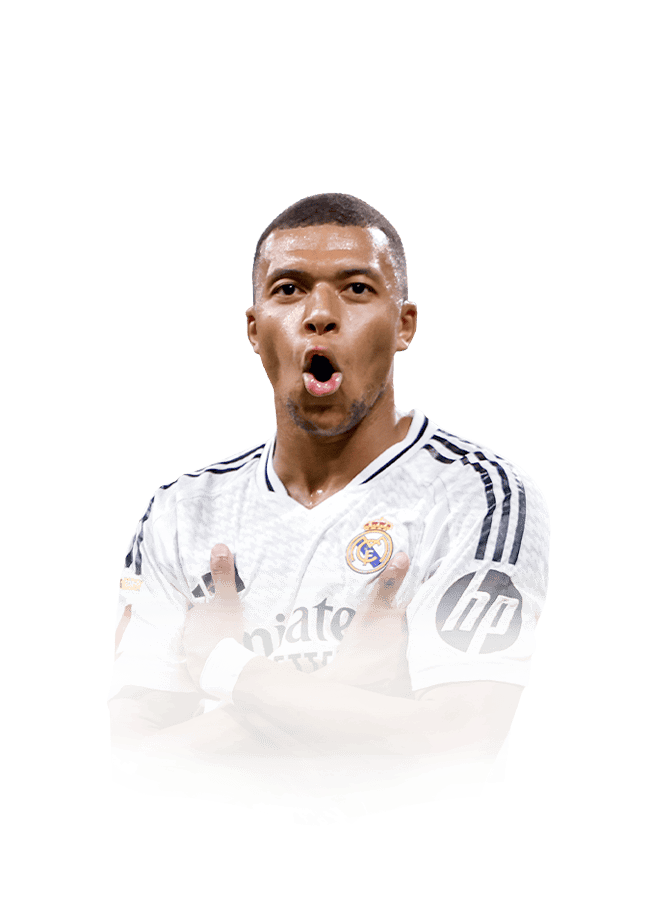
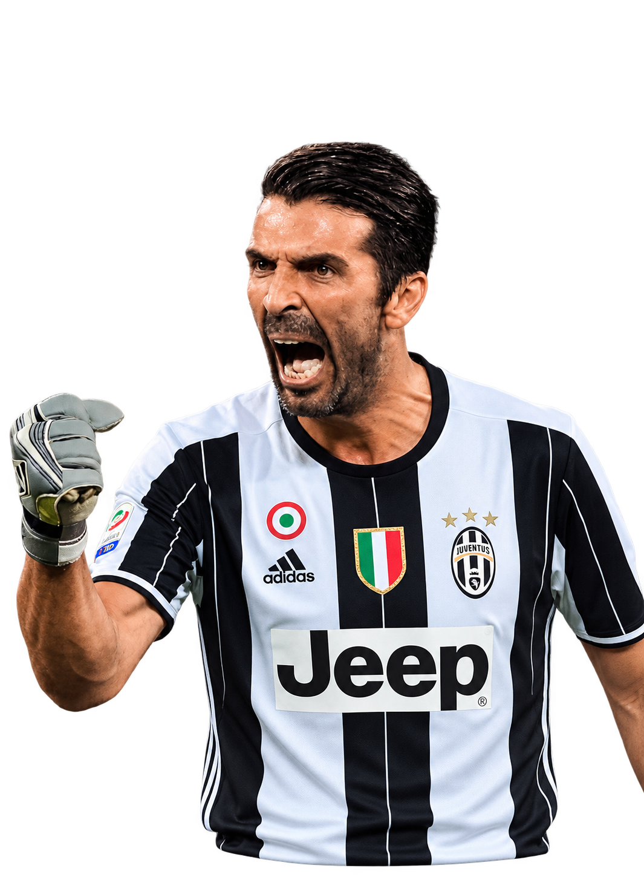
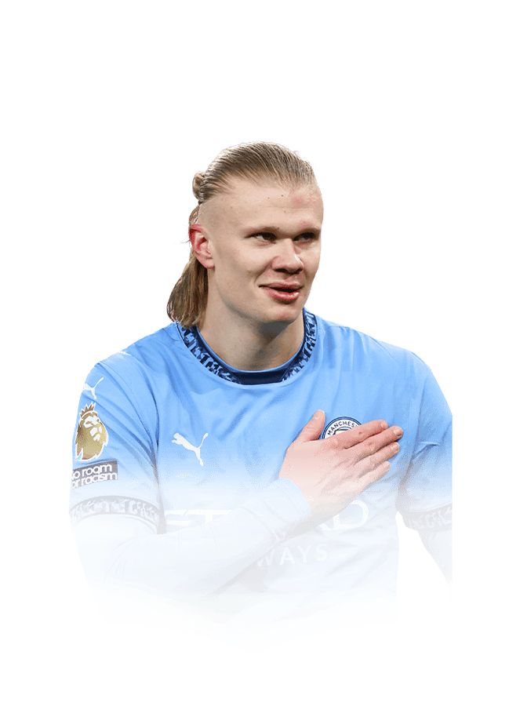
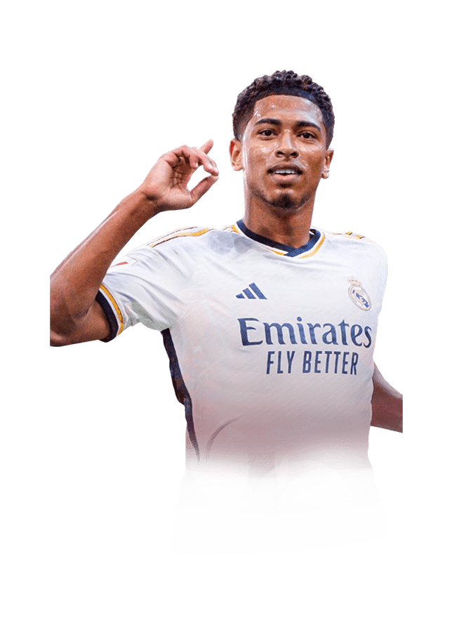

Escolha seu time.
Simule a campanha.
Elencos que fizeram história. Monte seu time com clubes e seleções e descubra até onde ele vai em uma nova campanha.
- 8 Formações
- 43 Clubes
- 32 Seleções
- 370 Elencos







Modos de jogo
00TÍTULOS CONQUISTADOS
—MELHOR CAMPANHA
00SEQUÊNCIA DE TÍTULOS
0%TAXA DE TÍTULOS
+36 clubes